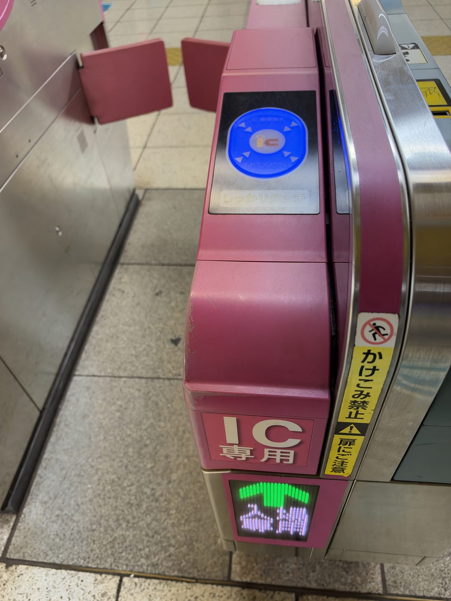
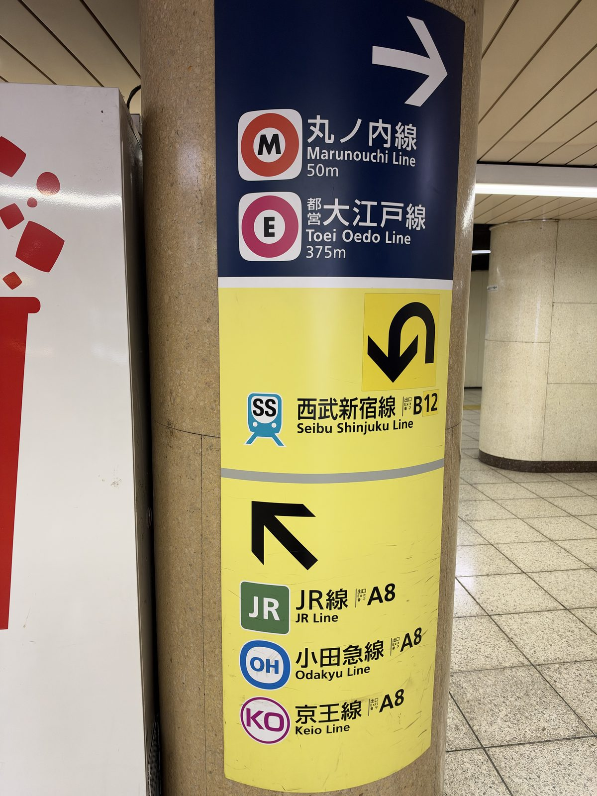
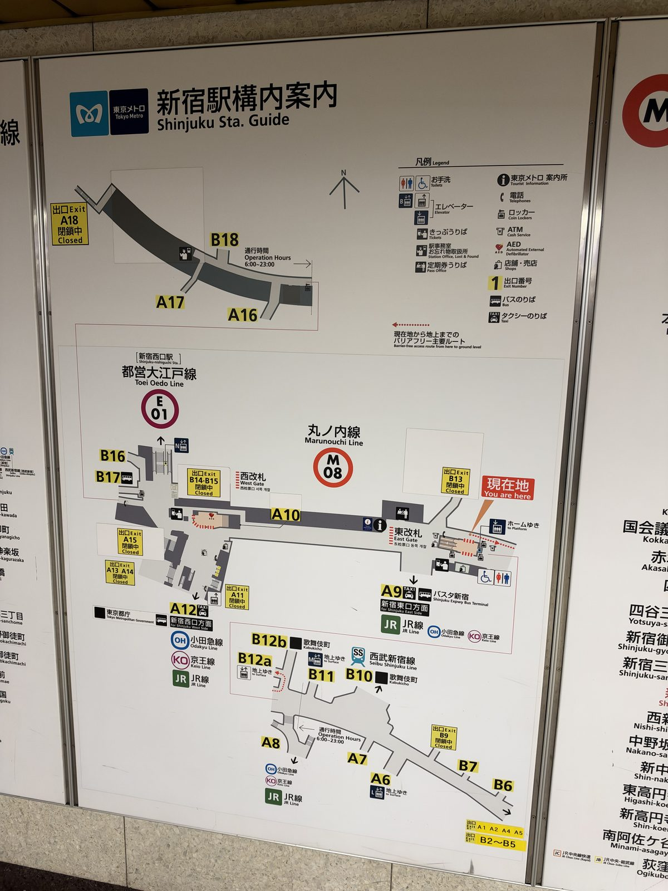

PLAN THE TRIP
A 10-Day Japan Shopping Itinerary for First-Time Visitors
Most Japan itineraries are built around what to see. This one is built around what you want to carry home, which changes the order of everything: when you buy, where you sleep, and what you do with the bags in between.
It covers Tokyo, Kyoto and Osaka in ten days with two hotel bases and one move. If you have seven days, cut days 6 and 7. If you have fourteen, add nights rather than cities.
The three rules this itinerary is built on
- Buy late, not early. Anything bought on day two is carried for eight days. The heavy and fragile things belong in the last third of the trip.
- One shop, one day, 5,500 yen. Tax-free needs 5,500 yen in the same shop on the same day. Splitting a list across two visits throws the exemption away.
- Let the courier carry it. Moving a suitcase hotel to hotel costs 2,000 to 3,000 yen and arrives the next day. You travel between cities with a day bag.
Days 1 to 4 — Tokyo
Base yourself near a station with several lines so you can drop bags back at the room mid-afternoon. Shinjuku, Ikebukuro and Ueno all work; Ueno is the easiest if you fly into Narita. Rakuten Travel lists Japanese hotels and ryokan, including small places that never reach the international booking sites, and prices them in yen at the domestic rate.
Day 1 — Arrive. Buy nothing.
Get the transport card, find the convenience store nearest the hotel, and eat there. This is reconnaissance, not shopping. The one useful purchase today is a cheap folding bag for the return flight.


One card covers the trains, the buses and most convenience store tills, so it doubles as small change for the rest of the trip. Large stations are their own problem: find the concourse map before you pick an exit, because the wrong one can put you fifteen minutes from where you meant to be.

More: what is actually worth buying in a konbini.
Day 2 — The 100-yen shop
Daiso, Seria or Can Do. Go early in the trip because this is the one category where buying more later is awkward: the good stuff is light, flat and cheap, and it fills the gaps in a suitcase rather than competing for space.
More: which 100-yen chain for what.
Day 3 — Drugstore
Sunscreen, sheet masks, cleansing balm, blotting papers. Do this in one shop in one visit so the total clears 5,500 yen and the tax comes off. Bring the passport itself, not a photograph of it.
More: reading a Japanese drugstore aisle without Japanese.
Day 4 — Department store food hall, then stationery
The basement food floors are where the gift-grade sweets and tea live, and where the packaging is built for travel. Stationery is the other Tokyo category worth a dedicated afternoon.
Day 5 — Move to Kyoto
Hand the suitcase to the hotel front desk before early afternoon and ask for it to go to the Kyoto hotel. It arrives the next day. Travel with a day bag.
Two and a half hours on the Shinkansen. Base near Kyoto Station if you are moving on quickly, Karasuma or Kawaramachi if you are staying put.
More: Kyoto and Osaka: one base or two.
Days 6 and 7 — Kyoto
Day 6 — Nishiki and the craft shops
Knives, tea, paper, textiles. This is the day for the one expensive thing you will actually keep, and the shops here are used to packing for travel.
Day 7 — Nara or a second Kyoto day
If you are tired of shopping, this is the day to stop. The itinerary has room for it because the buying is concentrated elsewhere.
Days 8 and 9 — Osaka
Fifteen minutes from Kyoto by express train. If your trip is under five nights total, skip the second hotel and day-trip instead; moving costs you half a day.
Day 8 — Shinsaibashi and Den Den Town
Shinsaibashi runs north as a covered arcade with drugstores thick at the southern end. Den Den Town is ten minutes away for electronics and hobby goods.
Day 9 — Repack and top up
Spread everything on the bed, weigh the case, and work out what has to go in the cabin bag. Liquids over 100ml are checked-bag only. Anything still missing gets bought today, in one shop, in one go.
More: what customs will take off you and the printable list.
Day 10 — Fly home
Send the large case to the airport the day before if your flight is early; same courier network, same price range. Keep the receipts and the tax-free paperwork where you can reach them.
What this itinerary deliberately leaves out
There is no shrine-by-shrine plan here and no restaurant bookings. Those are covered better elsewhere. What this page is for is the ordering problem: doing the shopping in a sequence that does not leave you carrying a broken suitcase to the airport.
If you have fewer days
- Seven days. Tokyo days 1 to 4, move on day 5, Kyoto and Osaka in two days. One base in Kyoto, day-trip to Osaka.
- Five days. Tokyo only. The 100-yen shop, the drugstore and the department store basement are all there, and you skip the move entirely.
When to go matters as much as how long: the weeks to avoid and the weeks that are quiet and cheap.